In the first lesson, we taught the turtle how to draw a square. We ended up with a procedure that looks like this:
TO SQUARE REPEAT 4 [ FORWARD 100 RIGHT 90 ] END
In this lesson, we are going to improve upon this procedure. We are going to create a procedure that draws squares of any size. And we are going to create a procedure that draws other shapes.
Our SQUARE procedure is pretty good, but we can make it better. Right now, the turtle only knows how to draw squares that are 100 pixels long on each side. Let's teach the turtle how to draw squares of any size.
We can do this by using something called a "parameter". A parameter is like a fill-in-the-blank for a procedure. When you define a procedure, you leave some values blank. When you call that procedure, you give it a value to use in that blank.
This may sound complicated, but it's not. In fact, you already know a procedure that takes a parameter: FORWARD. When you give the turtle a "FORWARD" instruction, you can't just say "FORWARD", you also have to tell him how many screen dots to move forward. This number is a parameter.
We are going to make SQUARE take a parameter that tells the turtle how long each side should be.
Activity: Press the "Edall" button and change the SQUARE function to the following:
TO SQUARE :LENGTH REPEAT 4 [ FORWARD :LENGTH RIGHT 90 ] END
The ":LENGTH" is our parameter. When we use this SQUARE procedure, we have to put a number after it. The number we use will be the number of pixels that the turtle moves forward when drawing each side. For example, "SQUARE 10" tells the turtle to make a square with sides that are 10 pixels long.
We can use our more powerful SQUARE procedure to draw an interesting design.
REPEAT 10 [ SQUARE REPCOUNT * 10 ] |
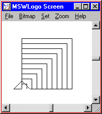 |
Now the turtle can draw a square of any size, but what about other shapes. What about a triangle? What about a polygon with five sides? What about a polygon with a hundred sides? Can we make a single procedure that draws a polygon with any number of sides?
Let's look at some code for drawing polygons and try to find a pattern.
REPEAT 3 [ FORWARD 100 RIGHT 120 ] |
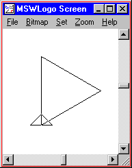 |
REPEAT 4 [ FORWARD 100 RIGHT 90 ] |
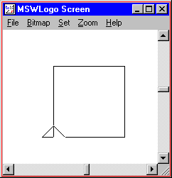 |
REPEAT 5 [ FORWARD 100 RIGHT 72 ] |
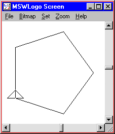 |
REPEAT 6 [ FORWARD 100 RIGHT 60 ] |
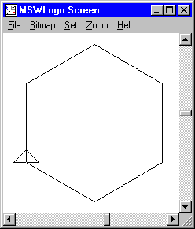 |
Do you see a pattern? All of these shapes were drawn by repeatedly moving forward and turning right. The number of times we repeat equals the number of sides. The amount that we moved forward doesn't change. The amount we turn seems to get smaller with more sides.
Now for the hard part: how much should we turn? If you add up the "outside angles" of any closed polygon, you always get 360°. In the shapes that we have drawn, all angles are the same size. For example, in a triangle, we have three angles. Since we have to turn a total of 360° for all three angles put together, each angle should be 360° divided by 3, or 120°.
So let's create a procedure that can draw all of the shapes above. We'll call this procedure "POLYGON". By the way, in Logo you divide by using the "/" operator.
TO POLYGON :SIDES REPEAT :SIDES [ FORWARD 100 RIGHT 360 / :SIDES ] END
POLYGON 3 |
|
POLYGON 4 |
|
POLYGON 5 |
|
POLYGON 6 |
Activity: Type in the POLYGON procedure and play around with it. What happens when you give it a number less than 3? What happens when you give it a large number, like 50?
Activity: Modify the POLYGON procedure to take a :LENGTH parameter, like we did for the SQUARE routine.
Activity: Create your own procedures that take a parameter. You can start from scratch or you can start with one of the samples from any lesson.
TO RIGHTTRIANGLE :LENGTH
FORWARD :LENGTH
RIGHT 135
FORWARD :LENGTH * SQRT 2
RIGHT 135
FORWARD :LENGTH
RIGHT 90
END
TO PYRAMID
RIGHT 45
REPEAT 4 [
REPEAT 10 [ RIGHTTRIANGLE REPCOUNT * 10 ]
RIGHT 90
]
LEFT 45
END
PYRAMID
|
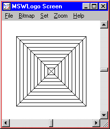 |
TO POLYGON :SIDES :LENGTH
REPEAT :SIDES [
FORWARD :LENGTH
RIGHT 360 / :SIDES
]
END
TO HEXAGONFLOWER :PETALS
REPEAT :PETALS [
POLYGON 5 50
RIGHT 360 / :PETALS
]
END
HEXAGONFLOWER 10
|
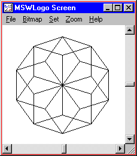 |
TO DOWNSLANT :LENGTH
REPEAT 2 [
FORWARD :LENGTH
RIGHT 135
FORWARD 20
RIGHT 45
]
RIGHT 135
FORWARD 20
LEFT 135
END
TO UPSLANT :LENGTH
REPEAT 2 [
FORWARD :LENGTH
RIGHT 45
FORWARD 20
RIGHT 135
]
RIGHT 45
FORWARD 20
LEFT 45
END
TO SHEET
REPEAT 2 [ DOWNSLANT 100 ]
REPEAT 2 [ UPSLANT 100 ]
DOWNSLANT 100
REPEAT 2 [ UPSLANT 50 ]
DOWNSLANT 50
REPEAT 2 [ DOWNSLANT 10 ]
UPSLANT 10
END
SHEET
|
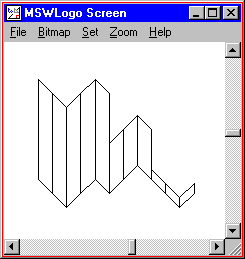 |
TO RECTANGLE :HEIGHT :WIDTH
REPEAT 2 [
FORWARD :HEIGHT
RIGHT 90
FORWARD :WIDTH
RIGHT 90
]
END
TO TRIANGLE :LENGTH
RIGHT 45
FORWARD :LENGTH * (SQRT 2) / 2
RIGHT 90
FORWARD :LENGTH * (SQRT 2) / 2
RIGHT 135
FORWARD :LENGTH
RIGHT 90
END
TO HOUSE
; draw the house
RECTANGLE 100 100
; draw the roof
FORWARD 100
TRIANGLE 100
BACK 100
; draw the door
RIGHT 90
FORWARD 60
LEFT 180
RECTANGLE 20 40
FORWARD 60
RIGHT 90
END
HOUSE
|
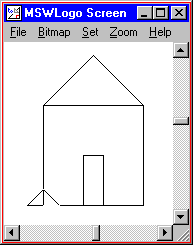 |
TO STAR :LENGTH :POINTS
REPEAT :POINTS [
FORWARD :LENGTH
RIGHT 180 - (180 / :POINTS)
]
END
STAR 200 9
|
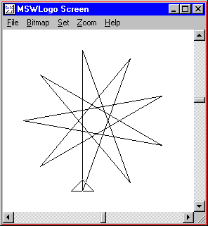 |
TO TRIANGLE :LENGTH
REPEAT 3 [FORWARD :LENGTH RIGHT 120 ]
END
TO TRIANGLEFLOWER :LENGTH :COUNT
REPEAT :COUNT [
TRIANGLE :LENGTH
RIGHT 360 / :COUNT
]
END
TO WEB
REPEAT 6 [ TRIANGLEFLOWER REPCOUNT * 25 18 ]
END
WEB
|
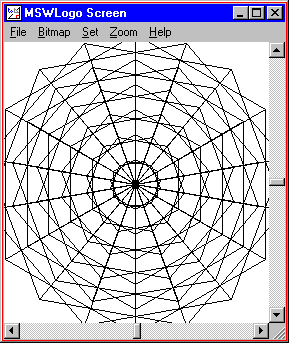 |